Photogrammetry
Photogrammetry is a broad field that involves obtaining metrics from photographs. Structure from motion (often abbreviated sfm) is a branch of photogrammetry focused on estimating 3D structure from photos. This is usually what we mean when we say photogrammetry, and I’m happy to continue using the generic term, but now you know.
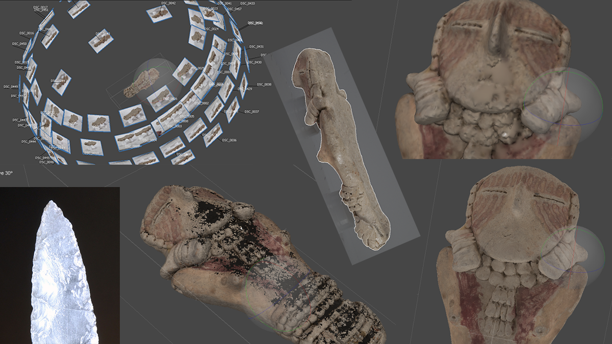
Photogrammetry is useful in a broad range of fields and is becoming a standard–even common–method in archaeology. 3D models can be used for preservation (artifacts cannot be replaced by 3D models, but much would have been preserved if we had 3D models of all the objects loss in the fire at the Museu Nacional in Rio de Janeiro), for public outreach (the Virtual Curation Laboratory is a great example), and for analysis (primarily through geometric morphometrics).
credit Brian McNeill
Photogrammetry is one of many ways to create 3D models, but it is one of the least expensive. Options range from free to use cell phone apps to professional software costing thousands a year for a license (here is a recent look at different software. Agisoft’s Metashape has been around a while (it used to be called Photoscan) and it is what I use the most (I use the standard version purchased with a student license).
My purpose here is to give a brief demonstration of my workflow for creating 3D models from archaeological artifacts (applies to any object really). The Metashape manual is quite useful, and there are a lot of good references online. I learned photogrammetry myself through Youtube and Google.
There is a major difference between creating a full, 360° model and making a landscape model or modeling a stationary object. Photogrammetry uses reference points in the images to calculate the 3D structure, but if you move something in the background or the object itself, then it creates problems. The problem with modeling an artifact is that you usually need to flip the artifact over to get all sides of it. Once you flip the object over the software will usually create something like this.
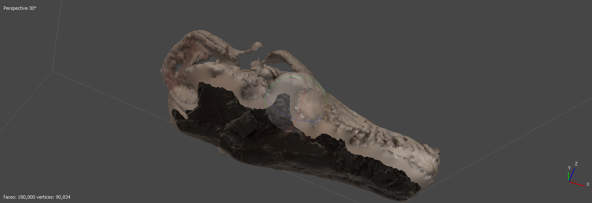
The solution is to tell the software to ignore everything in the background. There are many ways to do this, but the most sure is to make a black and white masks for each image. This is the process I’ll demonstrate, but before you make a 3D model you need to take the pictures.
And before that, you need something to model…
Selecting an object
Factors to consider when selecting an object are object geometry, surface reflection/transparency, sharp/fine edges, and moving/flowing parts. You need to be able to capture all aspects of the object from multiple camera angles. This can be challenging with small orifices or complicated geometry. For example, the Clay Pipe model below was challenging because I could not capture very far into the interior of the pipe. The size of the object makes a big difference but only because of the difficulty photographing it. If you can take a picture of it then then you can make a 3D model, but you may need special equipment for very small objects. A macro lens is a good investment.
Transparent and reflective images will not work for photogrammetry due to the light distortion, but you can coat the surface with something non-reflective. I’ve tried talcum powder and it worked, but it wasn’t my favorite (see Clovis point below for my talcum example–note that the obsidian looking surface in the 3D model was made using Blender. This is a good study comparing different options.
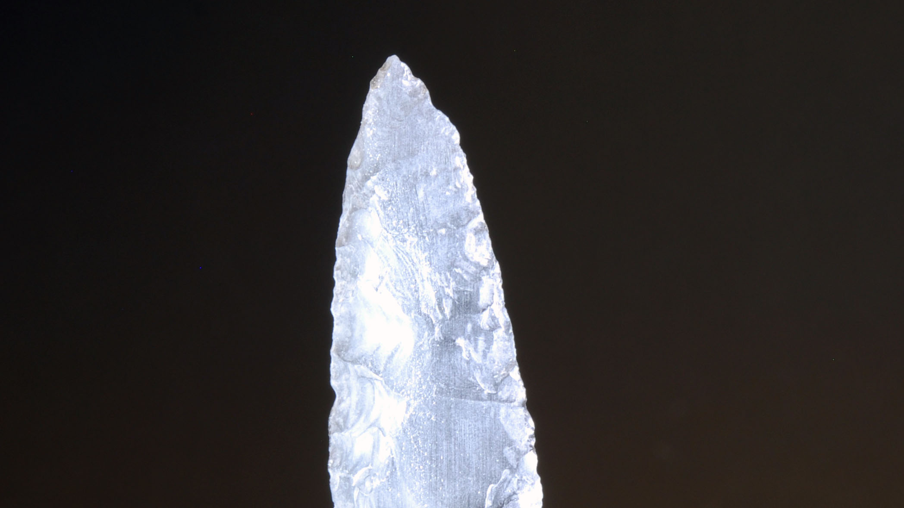
Clovis point coated in talcum powder
Another challenge is fine particles like hair or fur or sharp edges. The sharp edges of the obsidian Clovis point took several attempts to capture, but I found that taking lots of pictures helped. Anything that moves freely like hair or fur will be a challenge if it is not in the same relative position from photo to photo. This cradle figurine is a good example of how fur is difficult to capture. You can see that the edges are much fuzzier than other parts of the model. There are also holes where it was difficult to photograph the object due to the angles. I also didn’t want to set the basket upside down to photograph the back so that part is missing. To make the model seem nicer I added a board using Blender to make it look like it was sitting on something.
To start with, I recommend choosing an object with rough texture and relatively simple geometry. It should have some distinguishing features though. I’ve found clay figures work very well. Here is a dataset that I will use in this tutorial. These are pictures of Pillings Figurine No. 3 which is on display at the USU Eastern Prehistoric Museum. While choosing a good artifact is helpful for learning, don’t give up! I have been able to make 3D models work in some pretty bad situations–I even wrote a post about it.
Photography
This is the most important step! It doesn’t matter how good your software is if your photos are garbage or you don’t have enough of them. I’ll be brief in a section that could use a lengthy discussion, and I still have a lot to learn myself.
Equipment
I’ll list the optimal equipment here, but if you don’t have it then do without:
DSLR Camera
Macro lens
Tripod
Remote shutter release
Lighting
Turntable
Setup
Because you are removing the background, you want something as uniform as possible (think green screen technology but if you use green you may have to correct for the green glare). Choose something that contrasts with the color of the object so you can easily remove the background later.
You want the camera stationary for best results, so use a tripod. The remote shutter release is great so that you don’t bump the camera while taking pictures.
Lighting is always the most important element in photography. You want diffuse light that doesn’t cause harsh shadows. In fact, try to avoid all shadows (yes this can be a challenge–light boxes are one option).
The turntable makes life a lot easier. You can even put marks on it to tell you how far to rotate the table in between shots. I’ve never used one, but an automatic turntable setup would be amazing.
I haven’t mentioned a scale yet. Many people include a scale in the photos and then you can scale the model directly to the included scale. I don’t like it because I find it makes masking harder. My solution is to measure a feature of the object and then scale the object later. This post is a bit outdated now (I use Blender which has changed a lot), but it describes my process.
One challenge is how to place the object. You can use a stand, putty, or set the object directly on the turntable, or on something else to hold it slightly off the turntable (having the object off the turntable reduces shadows). This process is very dependent on the object you want to capture.
Taking pictures
Settings
Use manual settings on the camera. The fewer settings (ideally none) that change the better. You don’t even want the focus to change. My wife is a photographer but it wasn’t until I learned photogrammetry that I picked up how to use a camera manually. There are four key things to control–and they’re all related (changing one may require changing another):
Focus
Aperture
ISO
Shutter speed
You want as much of the object in focus as possible. Manually focus on the center of the object, and then don’t change the focus (turn autofocus off). The aperture (f-stop/f-number) controls the depth of field. This describes how much of the object is in focus at the same time. A low f-stop has a shallow depth of field, so you want a high f-stop. Be careful with the f-stop though. One mistake I used to make was using too high of an f-stop. If the f-stop is too high then the physics of light diffraction will make the images blurrier (Google it if you want to know why). You want the lowest f-stop that keeps the entire–or at least most–of the object in focus.
ISO is a balance between brightness and graininess. A low ISO gives you less grainy images but requires more light. A high ISO allows you to use less light but you will have grainy pictures. Set up your lighting to allow the lowest ISO.
Shutter speed is how long the camera shutter stays open. Longer exposures lead to brighter images. If you have a high f-stop then you let in less light, and if you have a low ISO you have a darker photo. The balance to these is to have a longer shutter-speed. If something moves while the shutter is open, then you will have a blurry photo. With a tripod and a stationary object on a turntable, you shouldn’t have to worry about how long the shutter stays open. The drawback is that longer shutter speeds means it takes longer to take the picture. More lighting can help with this though.
You’ll need to experiment with these settings until you have a photo that is sharp and not too dark. Once you have the settings right, don’t change anything until you’re done with the shoot.
Orientation
Take the photos from a high and low angles: around 45 degrees for high and then from an angle shallow enough to capture the side and some of the top. The can angles vary depending on the object. I like to take about 20 pictures as I move the object in a full circle. That translates to rotating the turntable 18 degrees per photo, but often I just eye ball it. If I’m shooting directly at a sharp edge then I will take more photos as I begin to directly face teh sharp edge (shooting directly at a straight edge isn’t very helpful). Usually I’ll set up the camera for a high angle, take the pictures, flip the object over, and then move the camera to a low-angle position and repeat that step. But it might be easier to move the camera than flip the camera over.
With this process I end up with about 80 photos. This is usually more than necessary, but not always. If any part of the object isn’t well captured in your photos then take as many additional photos as you need. You don’t have to use every photo in the 3D model, but if you need more photos then you have to do a lot more work.
Format and resolution
The more data the better, right? Larger files use more storage space and higher resolutions require longer processing times. You can always downsize an image but you can’t increase resolution without interpolating…and don’t bother trying that. I always choose the highest resolution. You can save your files in raw format for best results, but tif or png will work as well. Yes jpg also works, but I recommend against using a lossy format (meaning that jpgs lose some of the information you save–and yes, the tutorial files are in jpg because the data is stored on my website and needs to be as small as possible but I’ve still got the full-resolution tifs). You don’t even need to downsize images to speed up processing because Metashape can do that for you if you want.
Masks
I like to use photoshop to make my masks. You can even automate the process. What I do first is copy the photos into a new folder labeled masks. I then edit each photo in the masks folder and save it as is. It may help to add an _mask tag to each filename, but it’s up to you. The mask process is simple. Essentially you just need to select the object using your favorite selection tool. Use the fill tool to make the object white. Invert your selection. Then use the fill tool to make everything else black. Check my post on automating the process to see more details.
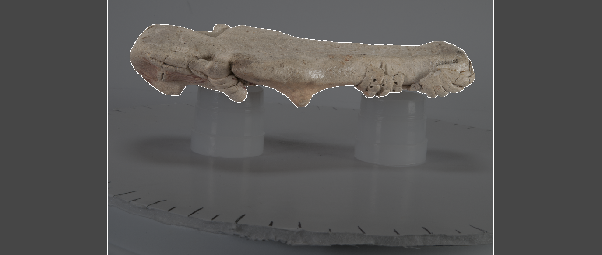
Import images and masks
Now we can open metashape. If you don’t have it, then download it on a free trial basis to start. You can download some reduced-resolution photos to follow along or include your own. Click on the Workflow drop down menu and select Add Photos. Select all of your photos and import them. Next, we need to add the masks. You’ll see a folder labeled Cameras under Chunk 1 in the workspace on the left. Click the arrow next to the Cameras folder to see all of the images. Right click on one (pick a photo, any photo) and find the option labeled Masks. Click Import Masks. You will see a menu like the one below. Your method should be From File. The operation should be Replacement. If you are using the test dataset then the filename should look like {filename}.jpg. What the filename structure means is that the software will look for a file with the same name as the images we already imported. If your image is A1.jpg and your mask is called A1_mask.jpg then the Filename template should look like {filename}_mask.jpg. Tolerance doesn’t apply to this operation and you want to make sure the All cameras option is selected in the Apply to section. Press ok, and you can then select the folder where the masks are stored. You should now see the non-object areas of your images grayed out.
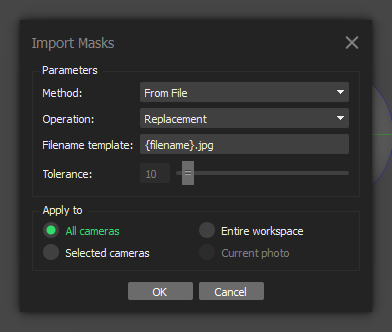
Align cameras
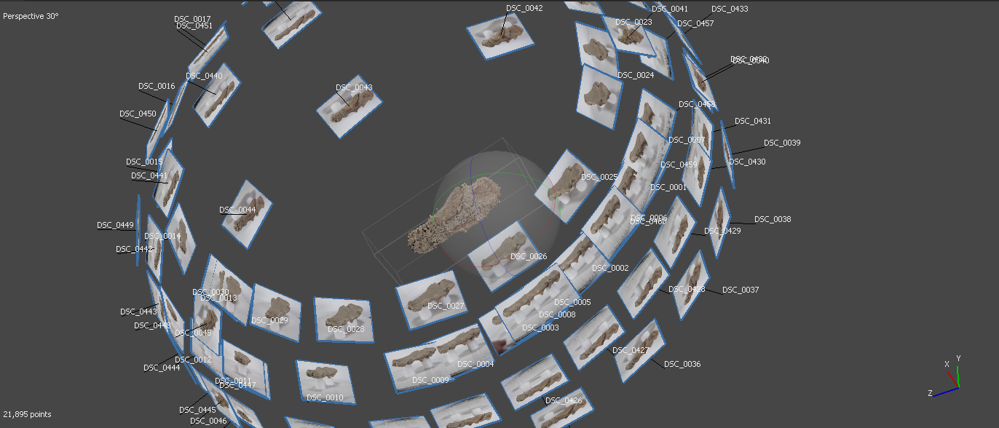
Go back to the Workflow menu and choose Align Photos. You’ll see a menu like the one below. You haven’t had to make any real decisions in the workflow up to this point, but now we have a lot of options. Aligning the photos is the most important step in the 3D modeling process. If this step works well then you will get a good 3D model, otherwise you’ll need new photos. Don’t get discouraged if your photos don’t align on the first try though! It can take a lot of playing with the settings if you have a difficult object, but you can get good results with bad photographs (see this article for archaeological examples). While you want your photos to align nicely the first try, higher settings shouldn’t be your first option and you can sometimes get better results with lower settings. The Accuracy option controls whether the image is reduced in size (your original images are not modified) before matching begins. I would try medium first and then work to higher settings if you get bad results. Higher settings can significantly increase the time it takes to align photos. Each of the following steps can take seconds to hours depending on the number of images, masks, and settings. Each of the steps below took less than a minute on my machine, but it may take much longer. You can check the manual for descriptions of every option, as I’ll only point out the ones that you need to change or double check. For this step, just choose your accuracy and make sure that the Apply masks to option reads Key points in the Advanced section. Hit ok and let the software run the calculations.
Click the show cameras option on the menu bar (looks like a camera) if you don’t see the positions of your camera next to the tie points that were just generated. The tie points should generally resemble your object, but don’t worry if some points are scattered about in the wrong positions. You can also check the positions of the cameras around the object. If one looks out of place then you can remove it, disable it, or (best option) try to realign it by right clicking on the photo and using the options listed there. If not all cameras are aligned, the first step I recommend is to try aligning again with higher settings.
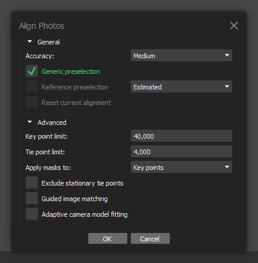
Build dense cloud
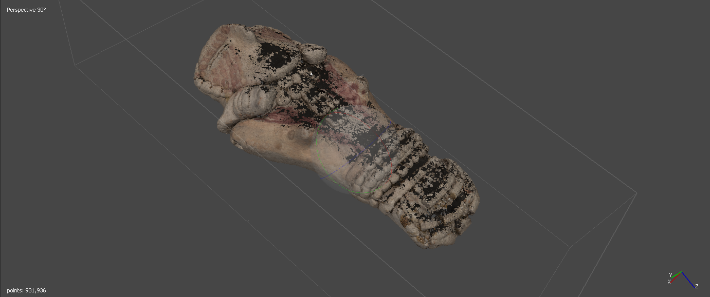
If all your cameras seem aligned then build your dense cloud by going back to the Workflow menu and choosing Build Dense Cloud. I would start with high quality in this case, as the photos are already reduced. I also usually choose Aggressive for the Depth filtering shown in the Advanced section. Press ok and you should get a result (this part will take the longest) that looks a lot like what you are trying to model.
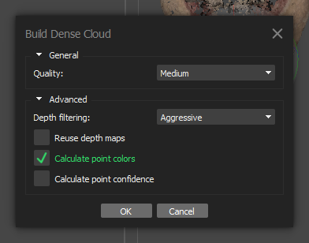
Build mesh
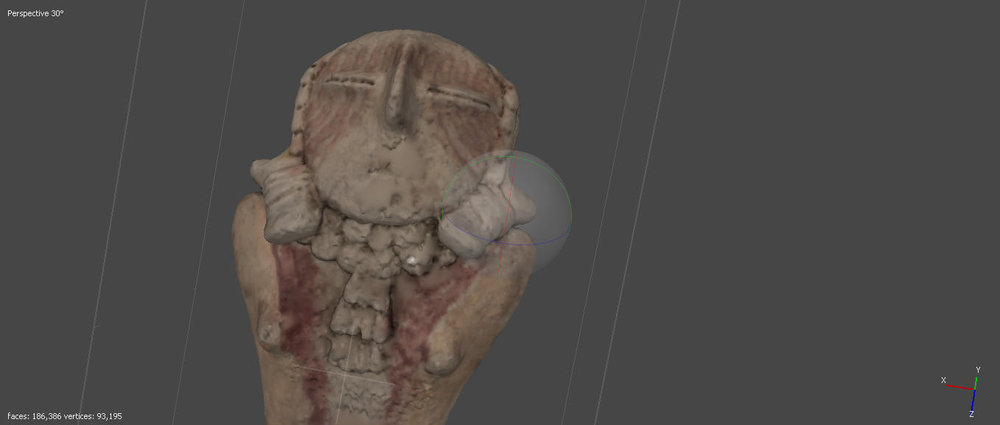
As you might guess, the next step is to go back to the Workflow menu and choose the next option–Build Mesh. I always choose a high Face count at this step. I leave everything else at its default. For some objects you will need to disable Interpolation in the Advanced section. This will attempt to fill holes which is often necessary, but sometimes it can distort the model and create an innacurate representation. If the model is meant for precise geometric morphometrics or other analysis then interpolation may cause problems. You should now have a 3D model that should even be 3D printable.
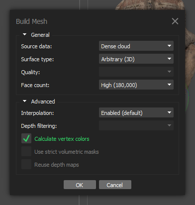
Add texture
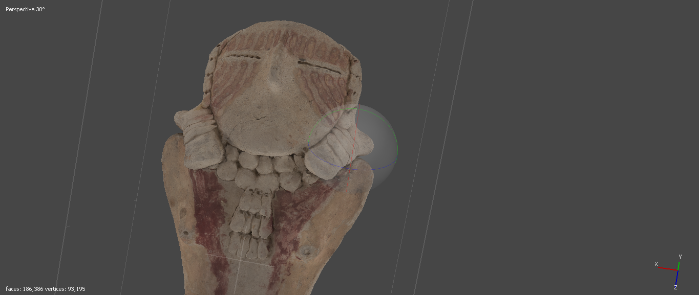
The last step in the photogrammetry process is to add a texture. This does nothing to the model from a 3D standpoint, but it does add a nice, photorealistic touch that significantly improves the look of your model. Select the Build Texture option from the Workflow menu, and leave everything at the default. In some cases, you may want to increase the texture size for more detail. You should notice much clearer looking details on the model now.
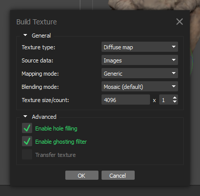
This is what your model should look like if you used the example files (except this model was made on full-resolution photos):
Export
There are other options to manipulate the model in Metashape that can be useful. 3D models are often huge files and your computer may struggle to render it. You can decimate the mesh (reduce the number of triangles) by going to Tools > Mesh > Decimate Mesh. Choose a target face count and the model size will be reduced. The great thing about photogrammetry is that as long as you have the original photos you can reproduce your workflow and create higher resolution models.
Once you are satisified with the model you can export it to a number of formats. Choose File > Export > Export Model. My default format is OBJ as it allows you to export the model texture. I usually use the defaults, except I like to choose png for the texture resolution. I will then use Blender to import the model and resize it or clean up bad parts of the model. Meshlab and Cloud Compare are other, open-sourced software that have a lot of great tools for working with 3D models. The easiest to view and share option is to save as an Adobe pdf. If you want to 3D print it, then export to STL.
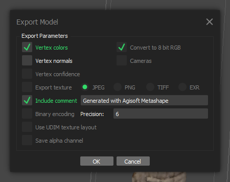
Next steps
Now that you have a 3D model what do you do? Share it, print it, and/or analyze it. Sketchfab is probably the easiest way to share your model, although they’ve made it harder to do anything for free lately. 3D printers are a lot cheaper than they used to be, but some libraries now have 3D printing services and there are many online options for 3D printing things. The field of geometric morphometrics has a lot of exciting developments for analyzing shapes and is the next step to explore if you want to start analyzing your 3D models.
If you have any questions, comments, or tips to share, please let me know in the comments or via email.